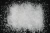

|
|
(For further information on spectroscopy, see:
http://speclab.cr.usgs.gov)
TITLE: Spodumene HS210 DESCRIPT
DOCUMENTATION_FORMAT: MINERAL
SAMPLE_ID: HS210
MINERAL_TYPE: Inosilicate
MINERAL: Spodumene (Pyroxene group)
FORMULA: LiAlSi2O6
FORMULA_HTML: LiAlSi2O6
COLLECTION_LOCALITY: Afghanistan
ORIGINAL_DONOR: Hunt and Salisbury Collection
CURRENT_SAMPLE_LOCATION: USGS Denver Spectroscopy Laboratory
ULTIMATE_SAMPLE_LOCATION: USGS Denver Spectroscopy Laboratory
SAMPLE_DESCRIPTION:
"I-7 Spodumene 210B-Afganistan. LiAlSi2O6: Spodumene is a characteristic mineral of lithium-rich granite pegmatites. It usually does not have a wide range of composition, but this sample contains enough ferrous iron to provide the broad weak band near 1.0µ and the fall off to the blue in the visible. In addition, water bands at 1.4µ and 1.9µ are evident, and the quite sharp feature near 2.2µ is a combination band of the OH stretching mode. These bands are due to a surprising small amount of clay mineral deposited in microfractures in the spodumene."
Sieve interval 74 - 250µm.
Hunt, G.R., J.W. Salisbury, and C.J. Lenhoff, 1973, Visible and near-infrared spectra of minerals and rocks: VI. Additional silicates. Modern Geology, v. 4, p. 85-106.
IMAGE_OF_SAMPLE:

END_SAMPLE_DESCRIPTION.
XRD_ANALYSIS:
Spodumene + quartz + trace muscovite (Norma Vergo).
END_XRD_ANALYSIS.
COMPOSITIONAL_ANALYSIS_TYPE: None # XRF, EM(WDS), ICP(Trace), WChem
COMPOSITION_TRACE:
COMPOSITION_DISCUSSION:
END_COMPOSITION_DISCUSSION.
MICROSCOPIC_EXAMINATION:
END_MICROSCOPIC_EXAMINATION.
SPECTROSCOPIC_DISCUSSION:
END_SPECTROSCOPIC_DISCUSSION.
SPECTRAL_PURITY: 1c2c3c4_ # 1= 0.2-3, 2= 1.5-6, 3= 6-25, 4= 20-150 microns
| LIB_SPECTRA_HED: | where | Wave Range | Av_Rs_Pwr | Comment |
|---|---|---|---|---|
| LIB_SPECTRA: | splib04a r 4604 | 0.2-3.0µm | 200 | g.s.= |
| LIB_SPECTRA: | splib05a r 6390 | 0.2-3.0µm | 200 | g.s.= |
| LIB_SPECTRA: | splib06a r 21114 | g.s.= | ||
| LIB_SPECTRA: | splib06a r 21126 | g.s.= |
{kind=link}